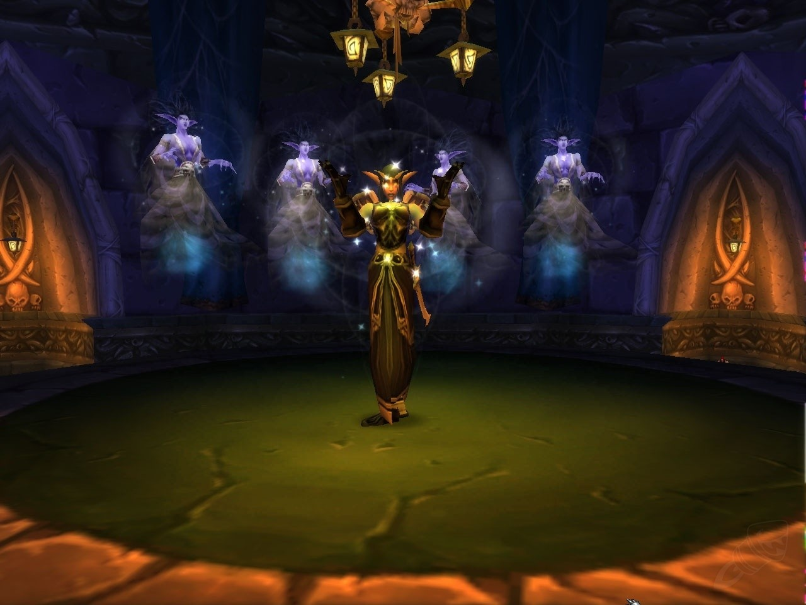

Lady Sylvanas Windrunner
The Banshee Queen who defied death and destiny

Upon returning the cherished locket, a gift from her sister Alleria,
found at Windrunner Spire in the Ghostlands, Lady Sylvanas Windrunner
sings the haunting Lament of the Highborne, her voice a poignant echo
of her lost past.
Timeline of Lady Sylvanas Windrunner
Early Life
- Before the Third War: Sylvanas is born as a high elf in the kingdom of Quel'Thalas. She becomes a skilled ranger and a leader of the Rangers of Silvermoon.
The Third War
- Year 25 of the Third War: Sylvanas leads the defense of her homeland against the Scourge. During the invasion, she and her forces fight bravely to protect Quel'Thalas.
- Fall of Silvermoon: Sylvanas is killed by the Death Knight Arthas Menethil, who raises her as a banshee, stripping her of her free will.
Post-Death and Rise as Banshee Queen
- Transformation into a Banshee: As a banshee, Sylvanas serves Arthas and the Lich King, suffering under his control until she regains her free will.
- Formation of the Forsaken: After breaking free from the Lich King's influence, she gathers other undead who seek to reclaim their autonomy, forming the Forsaken.
The Scourge War and Beyond
- Year 27 of the Third War: Sylvanas becomes the leader of the Forsaken and takes control of the Undercity, the capital of the Forsaken.
- Alliance and Conflict: Sylvanas navigates complex relations with the Horde and the Alliance, engaging in various battles and political maneuvers to secure her people's place in the world.
The Lich King and Cataclysm
- Year 28 of the Third War: Sylvanas plays a key role in the events leading up to the fall of the Lich King, participating in the battles of Northrend.
- Cataclysm: As the world changes, Sylvanas continues to strengthen her position within the Horde, leading the Forsaken against new threats.
Warlords of Draenor and Legion
- Warlords of Draenor: Sylvanas becomes more prominent in the Horde's dealings, navigating the conflict between the factions.
- Legion Invasion: She plays a significant role in the fight against the Burning Legion, using her cunning and strategic prowess to combat the threat.
Battle for Azeroth and Beyond
- Battle for Azeroth: Sylvanas's actions during this period spark controversy, particularly her decision to burn Teldrassil, leading to significant ramifications for the Horde and Alliance.
- Shadowlands: Sylvanas becomes a central figure in the events of the Shadowlands expansion, ultimately confronting the truths of her past and her motivations.
Legacy
- Aftermath: Following the events of Shadowlands, Sylvanas’s future remains uncertain, but her impact on the world of Azeroth and its history as a powerful leader and controversial figure is undeniable.